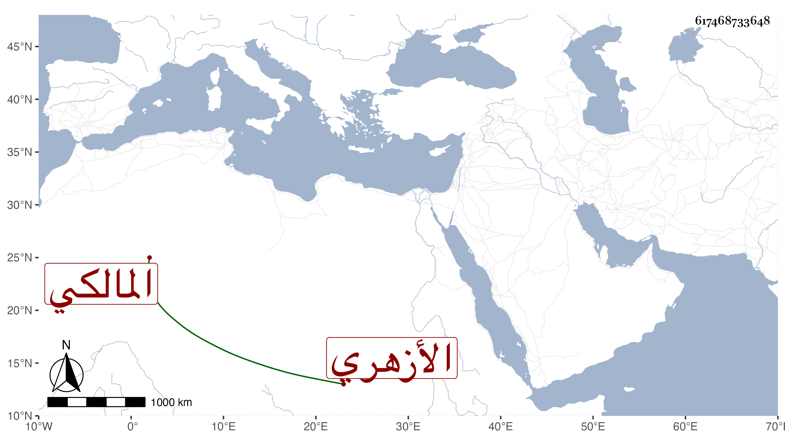

0902Sakhawi.DawLamic.ITO20230111-ara1.EIS1600.617468733648
Biography ID: 617468733648
203
محمد بن موسى بن عمر بن عوض بن عطية بن أحمد بن محمد بن عبد الرحمن الشرف بن الشرف اللقاني الأزهري المالكي الآتي أبوه والماضي ولده عمر والعمدة والرسالة وألفية النحو وعرضها على جماعة واشتغل يسيرا ودار على الشيوخ وضبط الأسماء وكتب الطباق وأكثر ومن شيوخه في الرواية التنوخي وابن الشيخة وعزيز الدين المليجي والمطرز والسويداوي والحلاوي وتكسب بالشهادة وغيرها ثم باشر الشهادة بعدة أوقاف وكتب في الإنشاء وولى قضاء الركب وكان نير الهيئة نقي الشيبة حسن الشكالة كثير العصبية والمروءة والمكارم حدث قبل موته باليسير وسمع منه الفضلاء . مات في يوم الاثنين خامس شعبان سنة أربعين بمنزله جوار جامع الأزهر وصلي عليه من الغد في الجامع ثم بمصلى باب النصر وصلي عليه فيه شيخنا وحضر جميع مباشري الدولة ناظر الجيش فمن دونه وكان الجمع كثيرا ، وذكره شيخنا في أنبائه فقال أنه نشأ مع أبيه وحفظ القرآن وقرأ به في الجوق وكان حسن الصوت ثم طلب الحديث وقتا وكتب أسماء السامعين واعتمدوا عليه في ذلك ثم اتصل بالشرف الدماميني حين ولي نظر الجيش ثم بفتح الله حين ولي كتابة السر فلازمه حتى استقر شاهد ديوانه وغلب عليه فلما زالت دولته واستقر ابن البارزي خدمه ولازمه حتى غلب عليه أيضا واستقر به في ديوانه وباشر في عدة جهات ، وكان كثير التودد والإحسان للفقراء والمحبة في أهل الخير والصلاح رحمه الله .
